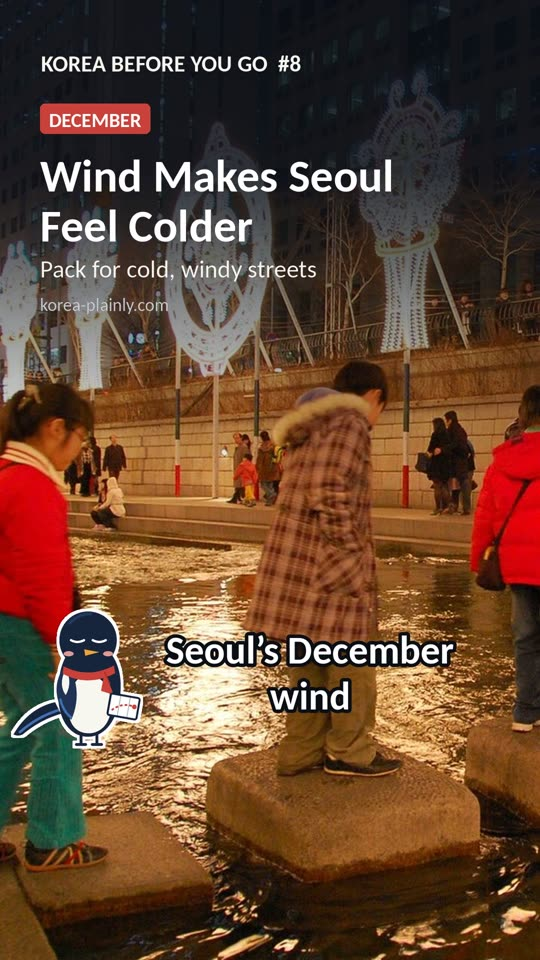

December is when Korea settles into winter. The air turns properly cold and dry, the skies are often clear and blue, and the cities fill with Christmas lights, winter markets and steaming street food. Ski resorts open, and the month ends with one of Seoul's biggest nights of the year. Here is what to expect and how to plan for it.

Watch the one-minute version
Subscribe for new videosWhat the weather is like
In Seoul, December days are usually around freezing to a few degrees above, and nights are below zero. A cold wind can make it feel much colder, and every few days a cold spell pushes temperatures down further. The first snow usually falls some time in December, though it rarely settles for long in the city. Busan and the south coast are a few degrees milder and drier; the mountains of Gangwon are the coldest and snowiest part of the country. Days are short, with darkness by about half past five.
Seoul in December
On average, Seoul's daytime highs are around 4°C and lows around −3°C, with colder spells well below that. December is dry, with only about 20 to 25 mm of rain or snow, and snow falls on about six days on average, usually lightly.
Busan in December
Busan is noticeably milder, with average highs of about 10°C and lows of around 2°C. It is usually dry and sunny, and snow is rare, falling on about one day in an average December.
Jeju in December
Jeju City averages highs of about 11°C and lows of around 6°C, but strong sea winds and grey, showery days make it feel colder. Light snow falls on a few days, and much more on Hallasan, which can affect hiking trails. See our Jeju in winter guide.
These are Korea Meteorological Administration averages for 1991–2020; real weather changes from year to year, so check the forecast before you go. For a full checklist, see our Korea packing list.
The good news: winter air is usually cleaner than spring air, so views from towers and mountains can be sharp. For the rest of the year, see our seasons and weather guide.
What to pack
- A warm padded coat. A long padded jacket is what most locals wear, and you will see why the first time the wind blows down a big street.
- Hat, gloves and a scarf. Easy to forget, and they make the biggest difference outdoors.
- Thin layers underneath. Trains, shops and cafés are well heated, so you will want to take layers off indoors.
- Thermal underwear if you plan to ski, visit the mountains or spend evenings outside.
- Lip balm and hand cream. Heated rooms and cold air are very drying.
Our winter travel guide has more on staying warm, including the heat packs sold in every convenience store.
Things to do in December
Christmas lights and winter markets
Christmas in Korea is a public holiday on 25 December, but it is more of a couples' and friends' celebration than a family one. The big department stores in Myeongdong put up famous light displays on their outside walls, and squares and shopping streets across Seoul light up. Our Christmas and New Year in Seoul guide lists the best places.
Seoul Winter Festa and the lantern festival
Seoul runs a winter festival around the city centre each year. Last winter it ran from 12 December to 4 January, with the Seoul Lantern Festival along Cheonggyecheon stream, a Christmas market in Gwanghwamun Square and an outdoor ice rink at Seoul Plaza. Dates for this winter are usually announced in late autumn; our festival calendar lists them once they are out. The lanterns are best after dark and on weekday evenings, when crowds are smaller.
The first ski days
Most ski resorts open from late November to mid-December, depending on the cold. Early in the season fewer slopes are open, but lift queues are short. Several resorts are an easy day trip from Seoul by shuttle bus. See our ski resorts guide.
New Year's Eve
At midnight on 31 December, the Bosingak bell in central Seoul is rung 33 times, and huge crowds gather to watch. Others drive or take overnight trains to the east coast to see the first sunrise of the year on 1 January (see our New Year sunrise guide). Both are busy, so plan transport early.
Warm up the Korean way
Winter is the season for hotteok (sweet filled pancakes), bungeoppang (fish-shaped buns with red bean) and fish cakes in hot broth from street stalls, and for a long soak in a Korean bathhouse. See our street food guide and bathhouse guide.
Tangerines and camellias on Jeju
December is the heart of tangerine season on Jeju, and the first camellias are in flower. It is milder than Seoul but windy. See our Jeju in winter guide.
Busy dates to plan around
- Christmas Eve and Christmas Day: restaurants, cafés and lit-up areas are packed, especially in the evening. Book dinner ahead.
- New Year's Eve and Day: trains to the east coast and hotels near sunrise spots sell out early.
- Year-end parties: December is the season for work dinners, so popular barbecue and drinking areas are full on weeknights too.
Is December a good time to visit?
Yes, if you like crisp winter weather and festive lights, and you dress warmly. It is a quieter month for sightseeing than autumn, apart from Christmas and New Year, and a great time for food, markets and skiing. If you want the coldest weather and the ice festivals, come in January; see our January guide.
FAQ
Does it snow in Seoul in December?
Usually a little. The first snow tends to fall in December, but heavy snow that stays on the ground is more common in January and in the mountains of Gangwon.
Is Christmas a holiday in Korea?
Yes, 25 December is a public holiday. Shops, restaurants and sights are mostly open and very busy.
What should I wear in Korea in December?
A warm padded coat, a hat, gloves and a scarf, with thin layers underneath that you can take off indoors.
Is Busan warmer than Seoul in December?
Yes. Busan's average highs are around 10°C in December against about 4°C in Seoul, and its nights usually stay just above freezing. It also gets much less snow.